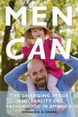

<body bgcolor="#FFFFFF" text="#000000" link="#0000FF" vlink="#CC0000" alink="#CC0000"><center><hr width="350" size="1" align="center" noshade>How American families are changing when it comes to care for their children<hr width="350" size="1" align="center" noshade><p><a href="https://cdcshoppingcart.uchicago.edu/Cart/ChicagoBook.aspx?ISBN=9781439900000&&PRESS=temple" target="_top">Buy this book!</a> | <a href="https://cdcshoppingcart.uchicago.edu/Cart/Cart.aspx?PRESS=temple" target="_top">View Cart</a> | <a href="https://cdcshoppingcart.uchicago.edu/Cart/Cart.aspx?PRESS=temple" target="_top">Check Out</a></p><p></p></center><!--none//--><h1>Men CAN</h1>
<H2>The Changing Image and Reality of Fatherhood in America</H2>
<h3>Donald N. S. Unger</h3>
<P>cloth 1-4399-0000-0 $30.50, Apr 10, <FONT COLOR=#990033>Available</FONT>
<br>Electronic Book 1-4399-0002-7 $30.50 <FONT COLOR=#990033>Available</FONT>
<BR> 240 pp
5.5x8.25
</P><BLOCKQUOTE><I>"Fatherhood is evolving. In </I>Men CAN<I>, Donald Unger tells the story of that evolution in ways that are warm, personal, and compelling. The picture that emerges is a hopeful one, but it will also be helpful and comforting to men and women struggling with new roles at home."</I>
<br>&#151<b>Jeremy Adam Smith</b>, author of <I>The Daddy Shift</I> and editor of Shareable.net <I></I></BLOCKQUOTE>
<p> In <em>Men Can</em>, writer, teacher, and father Donald Unger uses his personal experiences as a stay-at-home dad; stories of real-life families; and representations of fathers in film, on television, and in advertising to illuminate the roles men now play in the increasingly fluid domestic sphere.</p>
<p>Unger tells the stories of a half dozen families&mdash;of varied ethnicities, geographical locations, and philosophical orientations&mdash;in which fathers are either primary caregivers or equally sharing parents. He personalizes how Americans are now caring for their children and discusses the ways that popular culture reflects these changes in family roles. Unger also addresses the evolving language of parenting and media representations of fathers over several decades.</p>
<p><em>Men Can</em> shows how real change can take place when families divide up domestic labor on a gender-neutral basis. The families profiled here offer insights into the struggles of&mdash;and opportunities for&mdash;men caring for children. Unger favors flexible arrangements and a society that respects personal choices and individual differences, crediting and supporting functional families, rather than one in which every household must conform to a one-size-fits-all mold.</p>
<BR>&nbsp;<h2>Excerpt</h2><P>Excerpt available at <a href="http://www.temple.edu/tempress">www.temple.edu/tempress</a></p>
<BR>&nbsp;<h2>Reviews</h2>
<p><I>"Unger presents his arguments about the need for fathers to more fully embrace their role�which is central to children's healthy development�in a way that is both objective and refreshingly intimate and personal. </I>Men CAN<I> has much to offer readers, with its well-organized and powerful narratives of men struggling to find their way in society's new openness and reliance upon fathers to be primary parents, not just breadwinners."</I>
<br>&#151<b>Jonathan Diamond</b>, author of <I>Fatherless Sons: Healing the Legacy of Loss</I>
<p><I>"Unger�s on target in </I>Men CAN<I>. He takes on uncomfortable questions that spin off from a major social transformation. He deftly describes an emerging ethic that benefits children, mothers, and fathers. This is a wise book, with a wry sense of humor that profiles men who are literally changing what fathering means. </I>Men CAN<I> should be read by those who care about the modern family."</I>
<br>&#151<b>Haji Shearer</b>, Director of the Fatherhood Initiative at the Massachusetts Children�s Trust Fund
<p><I>"What jumps out from </i>Men CAN<i> is not its careful sociological analysis, but rather Unger's un-academic irritability when confronted with what he considers stifling stereotypes.... Unger is especially illuminating on the role of the media and other cultural forces in shaping our shared perceptions.... The book is incisive and fair-minded, too, about the competing agendas that often surround parenthood.... </i>Men CAN<i> is succinct and persuasive." </I>
<br>&#151<b><I>The Washington Post</I></b>
<p><I>"</i>Men CAN<i> does a fantastic job showing us how men are both fully capable and also how they benefit from such a shift towards care-taking. The book has excellent examples of men breaking out of the traditional model and dives in deep to help us understand their motivations and challenges along the way." </I>
<br>&#151<b><I>Equally Shared Parenting</I></b>
<p><I>"Donald Unger is right, the face of fatherhood is indeed evolving in America, and he shows us right from the beginning of </i>Men CAN<i> that he has done more than simply study and write about this evolution....The most enjoyable part of the book was Unger�s portrayal of the families he interviewed, all of whom had dads staying home as the primary caregiver....Many readers will appreciate these stories and connect on some level with the families portrayed." </I>
<br>&#151<b><I>Book Dads</I></b>
<BR>&nbsp;<P><p>
Watch Men CAN author Donald Unger:
<ul>
<li> <a href="http://www.youtube.com/watch?v=-zXe2hhHRbY">discuss the real life families he profiles in Men CAN</a></li>
<li><a href="http://www.youtube.com/watch?v=UrHfTqfrDGc">address what women can learn from reading Men CAN</a></li></ul></p></P><BR>&nbsp;<br>
<h2>Contents</h2><P>
<p>Acknowledgments
<br>
Introduction: When You Comin' Home, Dad?
<br>1. �ngel Nieto: The Leading Edge of Change
<br>2. The Problem of Language: Can Fathers <i>Mother</i>?
<br>3. Tom Andrejev: The Matter of Trust
<br>4. TV Dads: One Step Forward and Two Steps Back
<br>5. Darryl Smith: Recovering Our Own Fathers
<br>6. Poppins versus Kramer: Dad, You Have <i>Really</i> Changed!
<br>7. Ronnie Huang: What If We <i>Don't</i> Put Him in Day Care?
<br>8. TV Commercials and the New American Family
<br>9. Kevin Knussman: The Trooper Dad
<br>Epilogue
<br>Afterword
<br>Appendix A: Comparative Word Frequency (2006 and 2009)
<br>Appendix B: AT&T Wireless Commercial, &quot;Business Trip,&quot; Shot Sequence (Approximate)
<br>Appendix C: Comparative Word Frequency (2004 and 2006)
<br>Notes
<br>Selected Bibliography
<br>Index</p>
</P><BR>&nbsp;<H2>About the Author(s)</H2>
<table><tr><td valign="top"><img src="/tempress/authors/2024_au1.gif" height="90" width="75"></td><td width="100%" valign="middle"><p><b>Donald N. S. Unger</b> is a Lecturer in the Program in Writing and Humanistic Studies at MIT.</P></td></tr></table>
<BR><H2>Subject Categories</H2>
<p><A HREF="/tempress/general.html" TARGET="_top">General Interest</a>
<BR><A HREF="/tempress/sociology.html" TARGET="_top">Sociology</a>
<BR><A HREF="/tempress/family.html" TARGET="_top">Family Policy</a>
</p>
<p align="center"><a href="https://cdcshoppingcart.uchicago.edu/Cart/ChicagoBook.aspx?ISBN=9781439900000&&PRESS=temple" target="_top">Buy this book!</a> | <a href="https://cdcshoppingcart.uchicago.edu/Cart/Cart.aspx?PRESS=temple" target="_top">View Cart</a> | <a href="https://cdcshoppingcart.uchicago.edu/Cart/Cart.aspx?PRESS=temple" target="_top">Check Out</a></p><p><font face="Arial" size="1"><a href="copyright.html" onMouseOver="window.status='Web Copyright Policy';return true;" onMouseOut="window.status=''" title="Web Copyright Policy">&copy;</a> 2015 <a href="http://www.temple.edu" target="new" onMouseOver="window.status='Link to Temple University home page';return true;" onMouseOut="window.status=''" title="Link to Temple University home page">Temple University</a>. All Rights Reserved. http://www.temple.edu/tempress/titles/2024_reg.html</font></p>